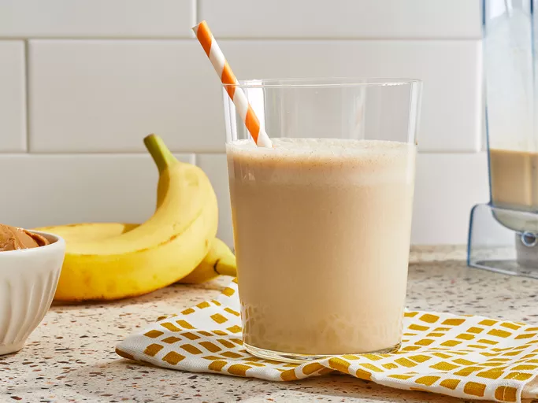

This peanut butter banana smoothie is so refreshing, and it's sweet and tasty.
Original recipe (1X) yields 4 servings
Breakfast, lunch, dessert, or snack time, any time's the right time for this delicious banana smoothie. With hundreds of ratings and reviews from our Allrecipes community, this easy banana smoothie recipe with peanut butter is an easy favorite, and it's ready in less than 5 minutes.
Gather all ingredients.
Place bananas, milk, peanut butter, honey, and ice cubes in a blender.
Blend until smooth, about 30 seconds.
Enjoy!